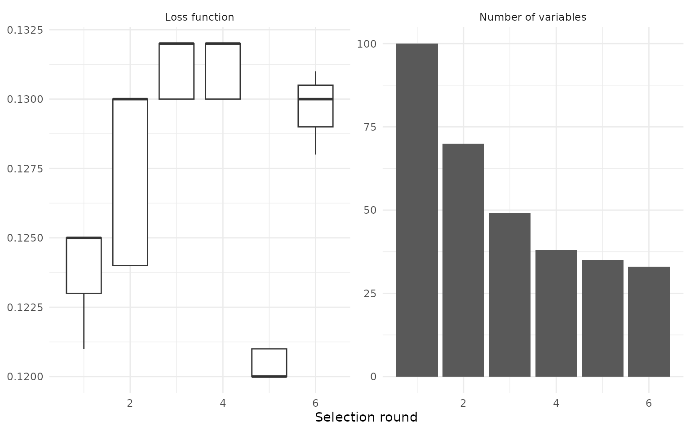

Feature selection on MNIST data
Source:vignettes/articles/Feature-selection-on-MNIST-data.Rmd
Feature-selection-on-MNIST-data.RmdFeature selection on MNIST data
This article shows how celavi can be used to visualize
the trade-off between predictive performance and model simplicity.
The example uses a reduced version of the MNIST data. The goal is not to build the best possible MNIST classifier, but to show how the feature-selection procedure removes variables across rounds and how much predictive performance is lost in the process.
set.seed(123)
n_train <- 10000
n_test <- 1000
n_pixels <- 100
iter <- 15
frac <- 1
num_trees <- 100
max_depth <- 8
min_node_size <- 20
stat_fun <- medianThe experiment uses 10^{4} training observations, 1000 test observations, and 100 randomly selected pixel variables.
The argument iter = r iter controls how many permutation
losses are estimated for each variable in each selection round. It does
not fix the number of selection rounds. The number of rounds depends on
how many variables are removed after each step.
pixel_cols <- sample(setdiff(names(klassets::mnist_train), "label"), n_pixels)
data <- klassets::mnist_train |>
dplyr::mutate(label = factor(label)) |>
dplyr::slice_sample(n = n_train) |>
dplyr::select(label, dplyr::all_of(pixel_cols))
test <- klassets::mnist_test |>
dplyr::mutate(label = factor(label)) |>
dplyr::slice_sample(n = n_test) |>
dplyr::select(label, dplyr::all_of(pixel_cols))Feature selection procedure
At each round, celavi fits a model, estimates the loss
caused by permuting each variable, and removes variables that do not
contribute enough to predictive performance.
Because label is a multiclass factor, the default loss
function is based on classification accuracy. Lower loss values indicate
better predictive performance.
x <- feature_selection(
ranger::ranger,
data = data,
test = test,
response = "label",
stat = stat_fun,
iterations = iter,
sample_frac = frac,
predict_function = function(object, newdata) {
predict(object, data = newdata)$predictions
},
parallel = FALSE,
# ranger-specific arguments
num.trees = num_trees,
max.depth = max_depth,
min.node.size = min_node_size,
num.threads = 1
)
x
#> # A tibble: 6 × 5
#> round mean_value values n_variables variables
#> <dbl> <dbl> <list> <int> <list>
#> 1 1 0.124 <dbl [15]> 100 <chr [100]>
#> 2 2 0.128 <dbl [15]> 70 <chr [70]>
#> 3 3 0.131 <dbl [15]> 49 <chr [49]>
#> 4 4 0.131 <dbl [15]> 38 <chr [38]>
#> 5 5 0.120 <dbl [15]> 35 <chr [35]>
#> 6 6 0.130 <dbl [15]> 33 <chr [33]>
selection_summary <- x |>
dplyr::transmute(
round,
loss = mean_value,
accuracy = 1 - mean_value,
n_variables
)
selection_summary
#> # A tibble: 6 × 4
#> round loss accuracy n_variables
#> <dbl> <dbl> <dbl> <int>
#> 1 1 0.124 0.876 100
#> 2 2 0.128 0.872 70
#> 3 3 0.131 0.869 49
#> 4 4 0.131 0.869 38
#> 5 5 0.120 0.880 35
#> 6 6 0.130 0.870 33Selection path
loss_data <- x |>
dplyr::select(round, values) |>
tidyr::unnest(values) |>
dplyr::transmute(
round,
metric = "Loss function",
value = values
)
variables_data <- x |>
dplyr::transmute(
round,
metric = "Number of variables",
value = n_variables
)
plot_data <- dplyr::bind_rows(loss_data, variables_data)
ggplot2::ggplot() +
ggplot2::geom_boxplot(
data = dplyr::filter(plot_data, metric == "Loss function"),
ggplot2::aes(round, value, group = round)
) +
ggplot2::geom_col(
data = dplyr::filter(plot_data, metric == "Number of variables"),
ggplot2::aes(round, value)
) +
ggplot2::facet_wrap(ggplot2::vars(metric), scales = "free_y") +
ggplot2::labs(
x = "Selection round",
y = NULL
) +
ggplot2::theme_minimal()
The left panel shows the distribution of the loss function across selection rounds. The right panel shows the number of variables kept by the model.
The expected trade-off is visible: the number of predictors falls sharply, while the loss function changes as the model is refitted with fewer variables.
The loss does not need to increase monotonically. After each round,
the model is trained again using the remaining variables, and removing
weak or noisy pixels can sometimes keep the loss stable. The main
purpose of the example is to show how celavi makes this
selection path visible.
first_round <- selection_summary |>
dplyr::slice_min(round, n = 1)
last_round <- selection_summary |>
dplyr::slice_max(round, n = 1)
initial_variables <- first_round$n_variables
final_variables <- last_round$n_variables
initial_accuracy <- first_round$accuracy
final_accuracy <- last_round$accuracy
variable_reduction <- 1 - final_variables / initial_variables
accuracy_change_pp <- 100 * (final_accuracy - initial_accuracy)In this run, the model starts with 100 variables and finishes with 33 variables. This is a reduction of approximately 67% of the original predictors.
The estimated predictive accuracy changes from approximately 87.6% to 87.0%. This is a change of about -0.6 percentage points.
This article is intentionally small enough to render quickly. The objective is not to optimize MNIST performance, but to make the feature-selection path easy to inspect.